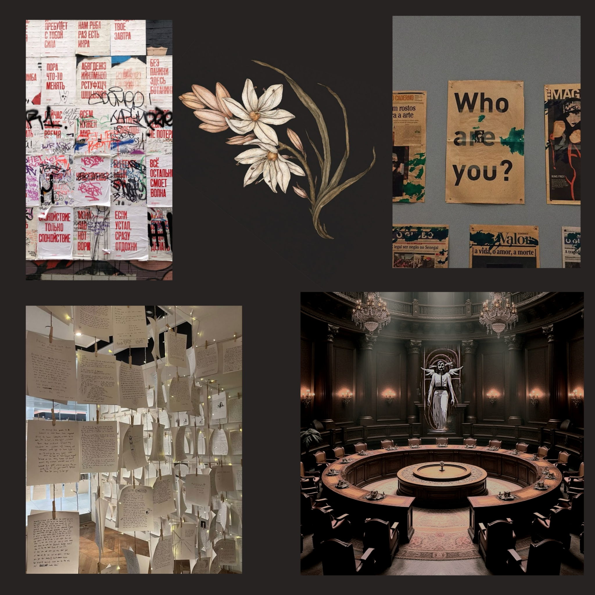

Асфодель: Ноев ковчег

Чтобы проникнуться атмосферой города, нажмите на картинку
Базовое описание мира и предыстории
Время: Близкое, но мрачное будущее. Технологии шагнули далеко вперёд, но общество деградировало.
Место: Мегаполис Асфодель, последний оплот человечества, окружённый радиоактивной пустошью — последствиями войн и экологических катастроф прошлого.
Проблема мира: Энергетический и экологический кризис. Солнце закрыто смогом, традиционные источники энергии исчерпаны.
Асфодель имеет структуру башни, которая тянется бесконечно высоко в небо, достигая облаков. Башня начала строиться ещё во время, когда люди были на грани гибели, оставшиеся без ресурсов и казалось бы без средств существования. Её строили засчёт общего горя, благодаря невероятному единству людей, и благодаря первым правителям Асфоделя.
Единственный источник света и жизни для города — «Сердечники» (аналог Ангельских Двигателей). Это гигантские реакторы, в ядре которых заключены пойманные и подключенные к системе ангелы. Их божественная энергия питает всё: от электросетей Пневмы (верхнего уровня города) до систем очистки воды в низинах.
Социальная структура города
Город строго разделён по вертикали, буквально и фигурально.
Деление на команды (Департаменты)
Красный - Департамент Безопасности (ДБ)
Кредо: «Порядок любой ценой. Сила — залог выживания»
Сильная сторона: Решительность, силовой подход
Для ДБ важно сохранение системы любой ценой. Они убеждены и искренне верят, что система несёт только благополучие для всех граждан Асфоделя. Ранее именно благодаря некой бессердечности (на самом деле жёсткости и беспринципности) ДБ Асфодель пережил глобальный кризис и продолжает существовать.
Они недовольны Мэром, потому что он из ДСМ, действия которых они никогда не могли предугадать и тем более контролировать. Но ради сохранения системы они будут терпеть его правление.
Синий - Департамент Логистики (ДЛ)
Кредo: «Все процессы должны быть оптимизированы. Эффективность — главная добродетель»
Сильная сторона: Стратегия, поиск оптимальных решений
Данный департамент начинает накапливать недовольства системой, но не из-за того, что в системе им плохо живётся, на удивление даже жители Сомы из ДЛ живут припеваючи, просто зная как оптимизировать свой бюджет. ДЛ недовольствуется системой так как она начали понемногу мешать их работе.
Зелёный - Департамент Био-Обеспечения (ДБО)
Кредо: «Жизнь — высшая ценность. Мы должны сохранить и приумножить её»
Сильная сторона: Эмпатия, забота о других
ДБО не доволен системой, особенно представители Сомы, так как система нарушает их основной принцип сохранения и приумножения жизни. Выходцы ДБО из Сомы видят, как начинает погибать жизнь Сомы из-за сбыта. При этом представители Психе и Пневмы в целом всем довольны, они не видят ужасов Сомы, они видят как цветёт природа благодаря тому, что теперь система использует ангелов, а не природные ресурсы, для добычи энергии. Но у всех возникают сомнения в обоснованности использования ангелов, ведь те также представляют собой жизнь, любые представители ДБО не потерпят издевательств над ангелами.
Жёлтый - Департамент Энергетики (ДЭ)
Кредо: «Энергия — это кровь города. Её потоки должны быть под контролем»
Сильная сторона: Технические знания, контроль
Именно в ДЭ меньше всего представителей Сомы. Когда появились ангелы, руки каждого из ДЭ оказались важны, каждый из них нашёл себе место под солнцем. Представители Психе считают, что те их коллеги, которые остались в Соме - либо хреновые и ленивые работники, либо слишком глупы, чтобы своровать себе хотя бы небольшой избыток энергии. Они вряд ли пойдут против системы, ведь именно она позволила им найти работу и угол для жизни.
Белый - Департамент Информации (ДИ)
Кредо: «Информация — настоящая власть. Тот, кто владеет данными, владеет миром»
Сильная сторона: Аналитика, шпионаж, работа с данными
Именно в ДИ зародилась коалиция бунтовщиков. Они уверены, что знают всё о городе и о каждом его жителе, в том числе о Мэре. Они ненавидят ДСМ потому что считают, что они забирают их работу. В глубине души они их боятся, так как они имеют примерно равные ресурсы и навыки, и на самом деле с виду уверенные бунтовщики сомневаются в том, что смогли собрать верную информацию о действиях Мэра и ДСМ. Но они прекрасно знают, что верхушка скрывает, что положение Сомы начало ухудшаться, они прекрасно знают, что ангелов захватили и используют без их воли, они знают что есть бесцветные, они знают о сбыте и о влиянии ДСМ на людей. Они думают, что раз уж Мэр до сих пор не начал на них охоту, значит они идеально скрываются, и значит он их боится. Но они не знают, что Мэр и ДСМ знают их шаги наперёд, они не знают, что на самом деле их существование сейчас просто удобно для поддержания системы в нынешнем виде, они не знают, что их вседозволенность мнимая.
Оранжевый - Департамент Социальной Адаптации (ДСА)
Кредо: «Гармония в обществе — основа стабильности. Все конфликты можно урегулировать словами»
Сильная сторона: Дипломатия, убеждение, переговоры
В целом ДСА имеют нейтральное отношение как к системе, так и к сердечникам с ангелами. Им важно сохранить социальный строй, им важно сохранить социум, важно сохранить стабильность. Они примут любую сторону, либо останутся нейтральны, но будут стараться урегулировать все конфликты дипломатическим путём, без оружия, лишь словами.
Фиолетовый - Департамент Медиации и Искусства (ДМИ)
Кредо: «Искусство и символы правят умами. Тот, кто контролирует нарратив, контролирует реальность»
Сильная сторона: Творчество, понимание скрытых смыслов, убеждение
ДМИ сблизились с ДИ по своим взглядам, особенно жители Сомы и Психе. Для них это путь "донести людям правду творчеством". Их ранит то, что правящие верха разрушают то прекрасно, что могло бы быть в мире. При этом представители ДМИ не готовы бороться, они лишь говорят. Доносят творческим путем информацию от ДИ, которые можно сказать их завербовали. Проблема ДМИ в том, что они видят лишь одну сторону, не пытаясь углубиться в причины.
Серый - Департамент Обслуживания (ДО)
Кредо: «Выполнять приказы. Не выделяться. Наша сила — в незаметности и надежности»
Сильная сторона: Исполнительность, работа в тени
Среди представителей данного департамента почти нет людей из Пневмы. Они работяги, которые почти не имеют влияния на систему. Они живые шестерёнки города. Они готовы работать на благо и на выживание. Это самые нейтральные представители Асфоделя. Они будут идти туда, куда идёт всё общество. Если показать им, что большинство придерживается какой-то точки зрения, они примут её и будут помогать двигаться к ней.
Чёрный - Департамент Утилизации (ДУ)
Кредo: «Город должен быть чист. Отходы, ангельские и людские, должны быть переработаны или ликвидированы»
Сильная сторона: Цинизм, прагматизм, готовность на неприятные решения
ДУ-шники готовы следовать системе, и готовы смириться с сердечникам с ангелами, но при этом условии. Они прекрасно видят, как ангелов пытаются использовать по максимуму. Они видят как система распределяет ресурсы между уровней. Им в целом ох, это не касается их деятельности. Единственное, что касается деятельности ДУ, это то, что даже от ангельского производства есть отходы, которые сливаются в низины города, загрязняя его. Именно ДУ начали производить из части отходов Манну, чтобы эти отходы были доступны для потребления. Их задача в сокращении количества отходов была закрыта, а куда начали использовать Манну и что ею начали барьжить и травить людей - не их проблема. Если они увидят способ энергетического производства при котором утилизация отходов будет проще, они будут свергать систему и менять. Если такого способна нет, их отношения к системе будет нейтрально, они просто выполняют свою задачу.
Голубой - Департамент Статистического Моделирования (ДСМ)
Кредо: «Предвидеть, чтобы контролировать. Контролировать, чтобы сохранить. Сохранить любой ценой»
Сильная сторона: Дальновидность, готовность к жертвам ради долгосрочной цели
ДСМ - серая лошадка в этой игре. Они знают о проблемах системы, но не их задача об этом говорить, их задача следить чтобы всё сохранялось как есть, потому что они знают, что если свергать систему сейчас, то Асфодель вымрет, и что если дать больше прав верхушке, то Асфодель также не выживет. Их задача, сохранить то, что есть сейчас, сохранить систему в нынешнем виде, пусть она не идеальна, но она даёт стабильность. Это знают как представители Пневмы, так и представители Сомы в ДСМ. Если они увидят способ, которым можно было бы улучшить нынешнюю систему и ситуацию в городе, при этом не уничтожив один из последних оплотов цивилизации, они смогут повлиять на все свои общества, в том числе на Мэра, ведь это единственный департамент, к словам которого прислушивается Мэр, даже если с ним говорит ДСМ-ник из Сомы. Они ведут свою, тихую, но самую влиятельную на весь Асфодель игру.
Ещё при зарождении Асфоделя семья Мэра, руководящая ДСМ, собрала департамент из особенно хороших стратегов, умеющих предвидеть и просчитывать все возможные варианты дальнейшего будущего и результаты принимаемых решений. В дальнейшем они обеспечили возможность установки компьютерных чипов в мозг каждому представителю ДСМ, что бесспорно помогало им прогнозировать будущее лучше. Это их дар и их проклятье.
Мэр выходец из ДСМ, поэтому он не стремится уничтожить бунтовщиков, поэтому он ограничивает руководителей других департаментов. Он использует тёмные средства для светлой цели.
Бесцветные
Кредо: «Выжить любой ценой»
Сильная сторона: Адаптивность, находчивость
Отбросы гетто, лишившиеся всего, даже принадлежности к департаменту. Они живут на окраинах Сомы, чаще всего либо родились там и не смогли себя показать на определении департамента, либо их лишили департамента за серьёзное правонарушение.
В отличие от большинства представителей Сомы, они не могут покинуть пределы нижнего города, но именно они обычно выживают за счёт контрабанды и сбыта в Сому. Бесцветные получают средства на существование благодаря совместной работе с ДУ, которые поставляют Манну для сбыта.
Механика игры
Каждое решение команды на точке будет добавлять очки к одному из трёх параметров Принадлежности и к одному из двух параметров Мировоззрения.
- Принадлежность: Бунт / Дипломатия / Жертва
- Мировоззрение: Честь / Корысть
Финал определяется комбинацией, набравшей наибольшее количество очков.
Очки набираются на каждой точке при помощи выборов команд и суммируются. Делаем систему, при которой команды вообще не парятся про саму механику, они не знают о системе статов, при этом перед походом на квест Мэр говорит им, что каждое их действие имеет последствие, и что это не просто про действие команды, а про действие каждого отдельного человека. Т.е. в целом дети будут думать о том, что именно они делают на точках, сталкиваясь с определёнными дилеммами, но не знают о "статах" которые они набирают.
У актеров на точках будут определённый список возможных действий команды на точке и каким статам эти действия равны, но при этом актёры на точках сами могут рассудить, какие статы добавить команде при их действиях.
Объединенность
Статы: Объединенность (Целостность, Разобщённость)
Последняя точка каждой команды - точка их департамента. На ней они ведут обсуждения со своим департаментом и убеждают либо в важности объединения, либо в разрозненности. Возможно какая-то команда, ДИ или ДБ, решит действовать самостоятельно и захватить власть. А возможно все объединятся, ради общего блага.
Каждая команда может самостоятельно влиять на то, объединятся ли люди Асфоделя ради общего блага. Глубинная цель каждой команды - среди всей этой разрозненности и борьбы каждого только за своё место под солнцем прийти к единству ради общего солнца.
Команды могут прийти к этому выводу сами, но на случай, если они к такому выводу не придут, как раз и разыгрывается аудиенция с Мэром. Тот человек из команды, кто пойдёт на аудиенцию, узнает от Мэра, что тот не только уже просто боится принимать какие-то решения и выбрал молчать, но и узнает, что Мэр понимает, что единственное спасение Асфоделя в объединении всех. Человек, который был на аудиенции, может донести эту мысль до команды, а команда в свою очередь донесёт до других команд.
Вопрос лишь в одном, готовы ли они довериться Мэру?
Ключевые персонажи
КАИН
Знаменитый бард из Психе, выходец из Сомы. Его творчество — едкая сатира на власть — сделало его звездой для низов и «придорожным шутом» для Пневмы.
АЗАЗЕЛЬ
Падший ангел, низвергнутая за гордыню и стремление сравняться с Творцом. Её сила огромна, но слепа и яростна.
ЛИра
Дочь Мэра, правителя Пневмы. Искренний идеалист, верящий, что систему можно изменить изнутри.
МЭР
Холодный и расчётливый правитель Асфоделя. Выходец из ДСМ, был рождён в Пневме. Он осведомлен о проблемах в городе и о недовольствах людей из Сомы.
Каин принадлежит ДМИ, в каком-то смысле он буквально завербован ДИ-шниками. Он мучается из-за ненависти бывших товарищей, считающих его предателем. Именно это чувство вины и жажда искупления толкнули его на освобождение ангела.
Азазель после освобождения Каином, видит в нём инструмент для мести и восстановления своего статуса, но постепенно в ней просыпается что-то человеческое.
Лира использует свои привилегии, чтобы помогать жителям Сомы, не подозревая, что её отец специально поощряет её «бунт», чтобы обладать большим количеством информации и рассчитывать все варианты работы над ситуацией. Она принадлежит ДИ, что несколько ограничивает её видение. Мэр несколько разочарован этим, так как понимает, что если бы дочь выбрала его путь и пошла бы в ДСМ, то она видела бы проблему системы под более широким углом и вероятно могла бы действовать грамотнее в организации бунта.
Мэр знает о бунтовщиках, он знает, что его дочь среди бунтовщиков. Иногда кажется, что он слишком много знает, поэтому не принимает резких решений, которых от него ждут руководители департаментов, из-за чего они считают его слишком мягким правителем, при этом и не исправляет положение Сомы, из-за чего нижний класс также им не особо доволен, считая, что он не заботится о людях. На самом деле Мэр слишком осторожен в своих действиях. Он знает что от некоторых руководителей департаментов нужно избавиться, он знает что нужно менять систему, но также знает, что любая его ошибка, как правителя, приведёт к краху Асфоделя, а этого он никак не может допустит. Он выжидает лучшего момента, и если за это ожидание ему придется лишиться головы, то он готов на такие жертвы во благо своего города, пусть даже он погибнет от рук своей дочери. С виду он кажется слишком циничным правителем.
Сюжет квеста
Ключевое событие: «Разрыв Света»
В главном Сердечнике, питающем Пневму, происходит мощный энергетический скачок. На несколько минут весь город погружается в кромешную тьму, а затем свет возвращается, но теперь он мерцает и искажается.
Основные этапы:
- Встреча гостей, речь Мэра
- Деление на команды в соответствии с департаментами
- Конкурсы и активности
- Аукцион с возможностью выиграть аудиенцию с Мэром
- Команды расходятся на точки, собирают информацию
- Финалы на основе набранных статов
1. Встречаем гостей, Мэр говорит о том, как же хорош их город и система деления общества, которую они установили, а также показывает основной источник энергии - сердцевину с ангелом. Также Мэр рассказывает о том, что сейчас удалось заключить договора с ещё несколькими ангелами, которые готовы отдавать свою божественную энергию на благо города.
Происходит знакомство с основными персонажами. За столом рядом с Мэра сидит Лира, его дочь. Она играет с Канном в гляделки, пока тот распинается в стихах, которые высмеивают высшее общество. Но Мэру и руководителям департаментов, которые сидят за одном столом, данное творчество нравится, оно их забавляет. Им приятно посмеяться над своими "недостатками" в стихотворной форме. Но сейчас возникает ощущение, что Каин переходит черту. В его стихах уже не просто насмешки, а уже почти прямые призывы к борьбе с системой. Мэр явно недоволен, но он не показывает этого недовольства. Он скорее похож на родителя, который устал от подросткового бунта своего ребёнка.
2. Деление на команды в соответствии с департаментами. Упоминание о том, что за место под солнцем нужно бороться и показывать себя. Командоры - челики разных вглядов, оба из среднего слоя города, один хочет вырваться в верхние слои, другой наоборот за "убрать систему слоёв". Тимбилдинг отражает и возможность выделиться, и возможность объединиться.
Во время тимбилдинга происходит одно из основных событий - бунтовщиков, в том числе Каина, вяжут. Важно, что они в этот момент начинают кричать и пытаться "донести" криком до гостей свои мысли об общем мире и сохранении того прекрасного, чего итак уже осталось мало.
3. Аукцион, где также предлагают выиграть аудиенцию одного человека с мером, которая позволит сразу же получить место в верхнем слое. Во время розыгрыша этого лота врывается Каин, который каким-то образом вырвался из СИЗО (аххахахаха). Мер смотрит на Лиру и спрашивает её ли это рук дело, на что не получает ответа, но по сути молчание и есть ответ. Каина ловит стража и несёт к столу мера. Каин предлагает свою жизнь в качестве ставки за место в высоком слое. Мер в ответ говорит своё "слово мера", ему внемлют главы департаментов. Его прерывает Каин, крича Лире "сейчас". Она срывает полотно с сердечника. Ангела там нет. Каина вяжут. Лиру также уводят. Мэр не выглядит паникующим, он выглядит разочарованным, как будто он ожидал этого шага, но надеялся, что они не на столько тупы, чтобы сделать такое. Он всё ещё предлагает аудиенцию с собой, но уже говоря о важности сохранения системы и о том, что он предоставит важную информацию для сохранения системы тому, кто придёт к нему на аудиенцию, и о том, что этот человек станет героем города, но теперь он предлагае это только одному добровольцу из ДСМ, кому-то кто ощущает себя достаточно ответственным для этого. При этом после розыгрыша говорит, что у каждого равные шансы в том, чтобы стать таким героем, узнать дальнейшие планы бунтовщиков и остановить их, помочь городу, и отправляет команды на квест.
4. Команды расходятся на точки, зарабатывают там статы, в различных комбинациях, как решая моральные дилеммы, так и совершая активные действия (что-то связанное с активностью), и собирая информацию.
5. Команды набрали определённые статы и выходят в финал.
Возможные финалы
ЧЕСТЬ + БУНТ Целостность
«Революция Разума». Силовое, но справедливое свержение старого порядка.
Каин и Лира возглавляют временный совет с участием представителей всех Департаментов и слоёв. Мэр рассказывает им всё, что знает, всю ту информацию, которой владел, но лишается жизни ради того, чтобы ДСМ был услышан. Начинается трудная работа по построению нового общества на основе справедливости. Ангелы освобождены, но Азазель остаётся, чтобы помочь на переходный период, видя в людях искру надежды. Со временем Асфодель станет городом, в который будут стремиться другие выжившие на земле, ибо он стал самым прекрасным городом. Можно сказать, что Вавилонская Башня всё-таки добралась до неба и Богов.
ЧЕСТЬ + БУНТ Разобщённость
«Диктатура Праведников». Бунт побеждает, но его возглавляют самые непримиримые.
Каин, ослеплённый правдой, становится новым Мэром. Система не сломлена, меняются лишь вывески. Начинаются чистки «ненадёжных элементов». Азазель в ужасе покидает мир.
ЧЕСТЬ + ДИПЛОМАТИЯ Целостность
«Хрупкий Мир». Командам удаётся найти компромисс.
Мэр добровольно передаёт часть полномочий новому совете, где представлены все Департаменты, при этом остаётся в качестве хорошего советчика, который теперь не принимает решения, а рассчитывает варианты возможных действий. Лира и Каин становятся его лицом. Начинаются долгие реформы. Ангелы освобождены, но люди просят их о помощи в переходе на новые источники энергии. Со временем Асфодель станет городом, в который будут стремиться другие выжившие на земле, ибо он стал самым прекрасным городом. Можно сказать, что Вавилонская Башня всё-таки добралась до неба и Богов.
ЧЕСТЬ + ДИПЛОМАТИЯ Разобщённость
«Вечный Застой». Достигнуто шаткое перемирие.
Мэр остаётся у власти, но его полномочия ограничены, теперь, даже видя возможные решения кризиса, он не может ничего сделать, его долгое бездействие погубило его. Система продолжает работать по-старому, но с ещё большей бюрократией и взаимными подозрениями. Ничего не решено, кризис только отложен. Со временем Асфодель погибнет.
ЧЕСТЬ + ЖЕРТВА Целостность
«Искупление». Понимая, что мирный переход невозможен, Каин и Азазель идут на самопожертвование.
Ир гибель становится шоком для всех, символом, который ломает стену между слоями и Департаментами. Их память объединяет людей для начала настоящих перемен. Для Мэра это становится переломным моментом, после которого он уже не может откладывать свои действия. Режими, но аккуратными шагами он меняет систему, заменяя руководителей департаментов, освобождая ангелов и передавая ресурсы Пневмы в Сому. Асфодель выживает и со временем он будет процветать.
ЧЕСТЬ + ЖЕРТВА Разобщённость
«Напрасная Жертва». Гибель Каина и Азазель ничего не меняет.
Каждая сторона использует её в своей пропаганде, чтобы обвинить других. Раскол только углубляется. Город скатывается в гражданскую войну. ДБ избавляется от Мэра, так как им кажется, что он не стремится сохранить систему. Лира возглавляет бунтовщиков, возможно они выиграют эту войну, но будет ли жив после этого Асфодель?
КОРЫСТЬ + БУНТ Любой
«Кто был ничем...» Побеждает самая циничная и жадная фракция.
Власть захватывает один из Департаментов (например, ДИ). Мэра жестоко убивают, от Лиры избавляются, боясь, что она будет мстить за отца, Каина пытают поставить на место Мэра, но он не справляется, не выдерживает давления, к тому же Азазель, видя весь этот ужас, покидает Каина и город. Система становится ещё более жестокой и несправедливой. Новые правители находят способ поймать новых ангелов. Асфодель не гибнет, но только пока. Постепенно все увидят, что Сома, тело города, практически полностью сгнило.
КОРЫСТЬ + ДИПЛОМАТИЯ Любой
«Сделка с Дьяволом» Команды продают информацию тому, кто больше заплатит.
За информацию всегда готов платить ДБ, ради сохранения системы. Власть захватывает ДБ. Система сохраняется в самом худшем виде. Игроки получают свои «30 сребреников» — места в Пневме, предав остальных. Асфодель выживает, но только благодаря жёсткому и строгому руководству ДБ.
КОРЫСТЬ + ЖЕРТВА Любой
«Бессмысленная Жертва» Жертвы были (возможно, погибла Лира или кто-то ещё), но они ни к чему не привели.
Мир не стал лучше. Коррумпированная система только укрепилась, используя эти жертвы как оправдание для ужесточения режима. Асфодель гибнет.
Оформление
Современное средневековье. Мир будущего, но страшный мир будущего.
Не высоко-технологичный с летающими машинами, небоскребами и роботами вместо людей. Всё подобное было почти полностью уничтожено при борьбе за последние ресурсы. Да, возможно часть людей и существует с роботизированными частями тела, но в основном человечество может позволить себе вживить только чипы в мозг. Неоновые вывески остались, но они остались пережитком прошлого. Теперь те, кто побогаче пытаются показать свой достаток не красивыми побрякушками, а ангельскими перьями. Если у семьи есть хотя бы одно ангельское перо, которое носит глава семейства, значит семья точно не из Сомы.
По всему городу висят плакаты. Чем ниже спускаешься, тем больше на плакатах лозунгов против системы. Чем выше, тем больше плакатов красного цвета, это плакаты ДБ, гласящие о том, что нужно сохранять систему любой ценой. Большая часть плакатов фиолетового цвета, что логично, ведь их рисовали люди из ДМИ. При этом каждый департамент старается украсить своё место работы плакатами с лозунгами их департамента, а также всякими штуками, связанными с их деятельностью, например ДЭ-шники безумно любят лампочки в качестве украшения своих домов и рабочих мест.
У каждого человека на заметном месте тела есть метка. У метки есть рисунок, который определяет класс человека (Сома, Психе, Пневма), а также у метки есть цвет, определяющий департамент. Все организаторы имеют метки.
В центре зала за спиной Мэра накрытый красной тканью стоит Ангел. Это должен быть человек в бело-золотой одежде. Возможно с чёрными умирающими участками тела. Он весь окутан проводами, он источник энергии для города, как и несколько его собратьев, но их нет в зала, скорее всего они в самом центре сердечника.
Подробнее о сюжете
Подробнее со всем сюжетом вы можете ознакомиться по ссылке: https://docs.google.com/document/d/1Uu1KbxhOIRGa9J5epBDt7rnpUyi7pQCmtrLJ6zPhBgI/edit?usp=drivesdk